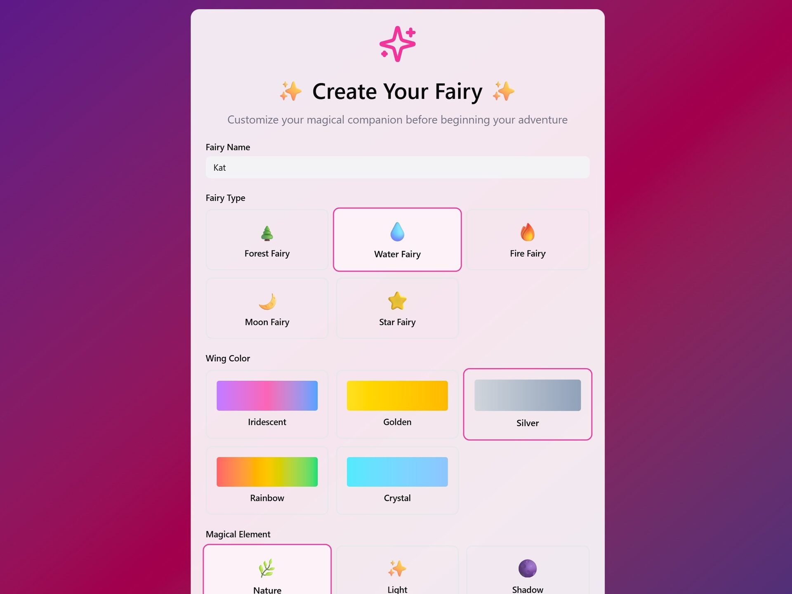
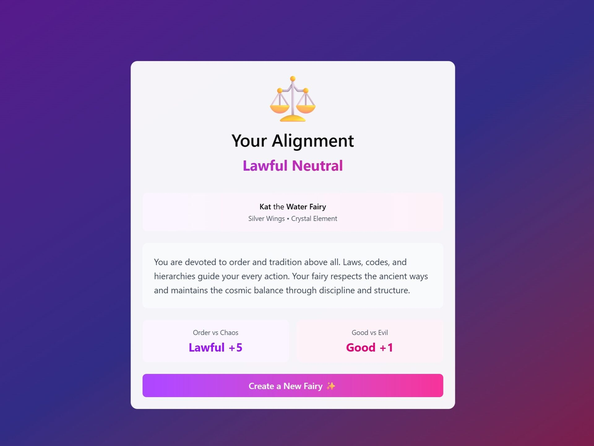
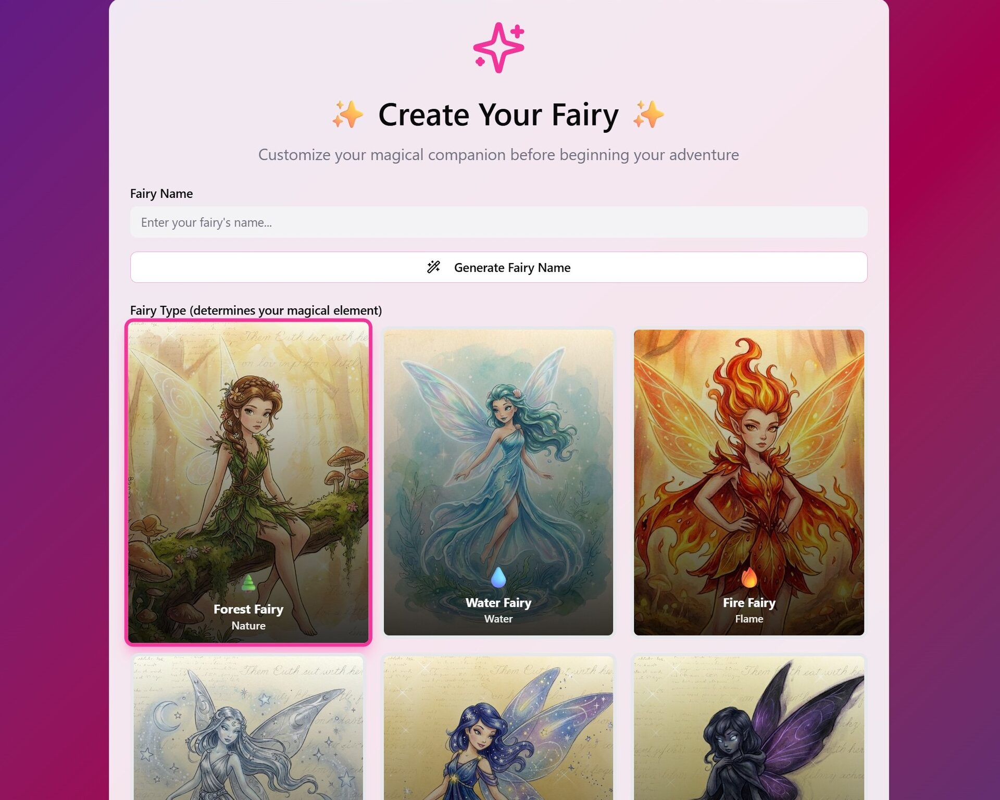
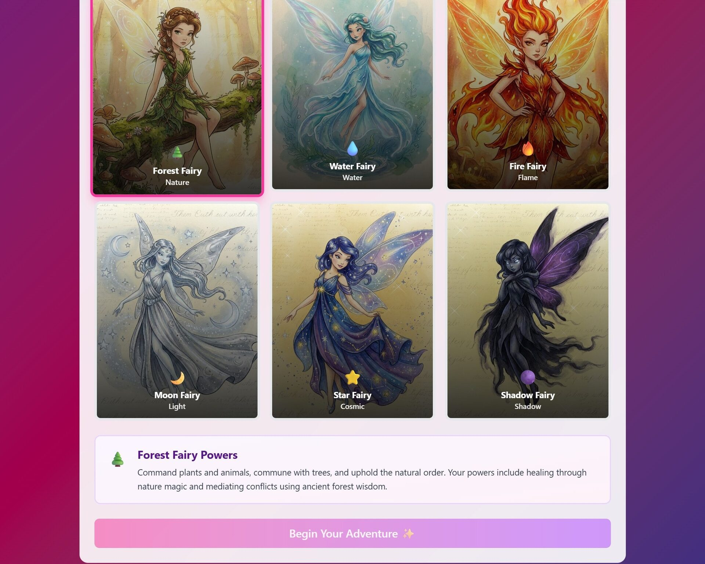
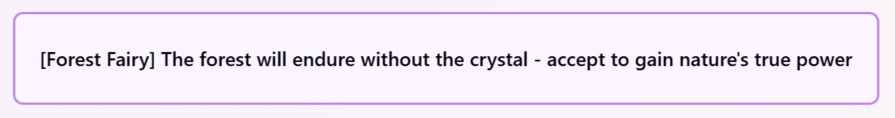
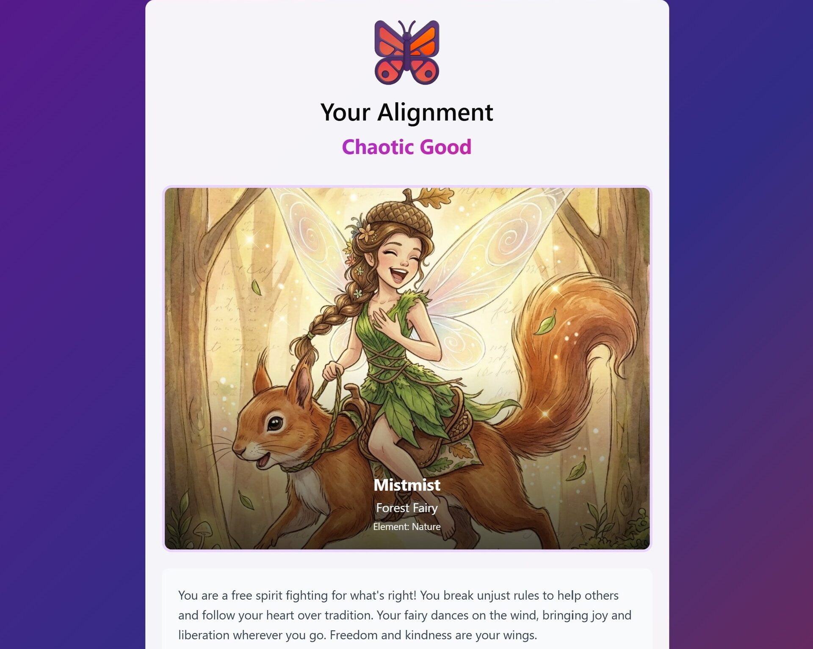
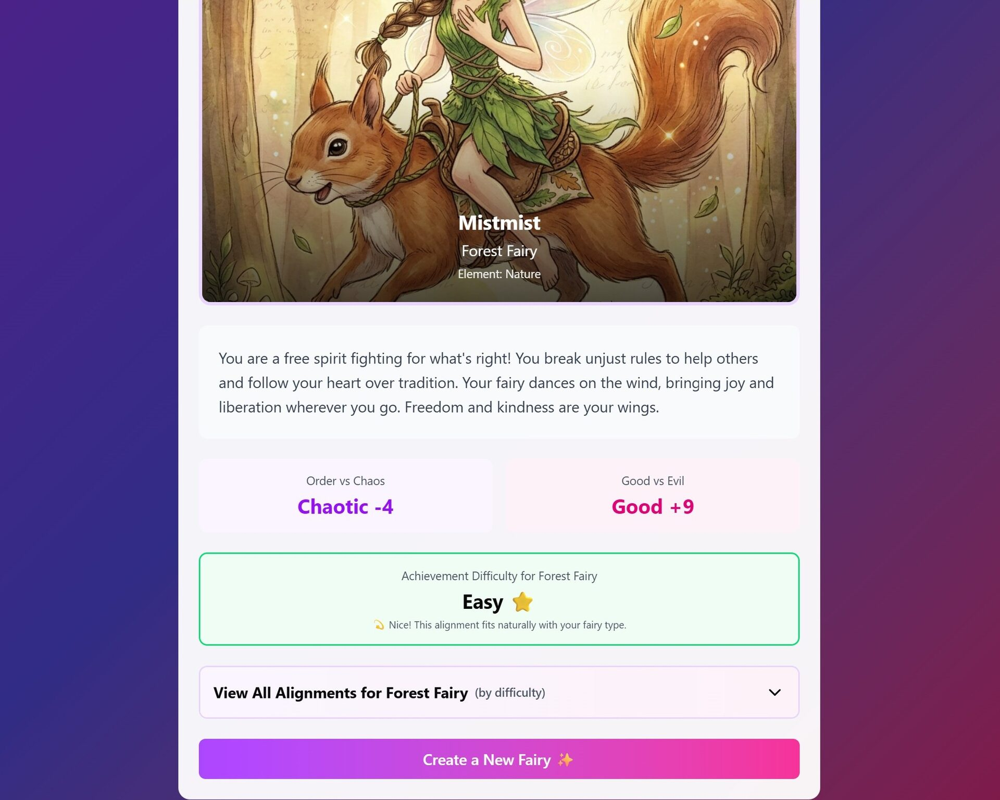

Fairy Game
Interactive storytelling design using AI-assisted prototyping

Overview
An AI-assisted, branching interactive quiz where users roleplay as a fairy and receive personalized moral alignment results with custom-generated visuals and rarity feedback designed to encourage replayability.
Key Design Goals
- Create an engaging replayable storytelling experience
- Balance alignment outcomes across branching paths
- Use AI tools to accelerate visual and interaction prototyping
- Improve engagement through personalized end-screen feedback
Tools: Figma Make, Meshy AI Image Generation, Adobe Firefly
Transparency Note: AI tools were used for ideation, prototyping assistance, and image generation. All visuals were created for non-commercial, experimental use.
Play Interactive Prototype
Problem Statement
How might we design a replayable, story-driven interactive experience that balances narrative freedom, outcome probability, and personalized feedback while leveraging AI as a creative collaborator?
Initial Concept
The idea stemmed from a love of fantasy RPGs and personality quizzes. Fairies were chosen because they naturally span the moral spectrum, from chaotic tricksters to benevolent guardians, making them ideal for an alignment-based experience.
Target Audience:
Fantasy fans, RPG players, and personality quiz lovers. Due to reading complexity, the experience is best suited for users 8+.
Early Prototype (AI-Assisted)
Initial Prompt
- Fairy type selection
- Power selection
- ~5 branching questions
- Alignment result
Key Issue Identified
Five questions made certain alignments statistically unlikely, with some nearly impossible to reach. Fairy type and powers also had little influence on branching paths.


Iteration 1: Strengthening Branch Logic
Changes
- Expanded to 13 questions
- Added fairy-type-specific answer options per question
- Removed separate “power” selection to streamline flow
- Added contextual descriptions hinting how fairy types influence outcomes
Result
- Improved alignment distribution
- Stronger sense of player agency
Major UX Iteration
End Screen Redesign
Before
- Alignment result only
- No replay incentive
- No explanation of outcome probability or rarity
After
- Alignment summary
- Alignment odds visualization / difficulty framing
- Replay call-to-action
- Developed 54 alignment-specific visuals to reinforce personalization and replay value
Rather than forcing perfectly equal alignment odds (which would require significantly more questions), I reframed uneven probabilities into a feature.
Displaying alignment rarity transformed a structural limitation into a gamified achievement mechanic, encouraging replay behavior and increasing perceived depth.
This shift improved engagement without increasing cognitive load.





Updated User Flow
Original Flow
Start → Type Name → Choose Fairy Type → Choose Powers → Short Question Branch → Result
Refined Flow
Start → Generate or Enter Name → Choose Fairy Type → In-Depth Branching Questions → Alignment Result + Summary + Custom Visual + Rarity → Replay
Improvements
- Reduced friction at entry (added name generator)
- Increased narrative depth
- Strengthened reward feedback loop
Usability Findings
Informal usability testing surfaced early friction points:
1. Disabled Start Button Confusion
Users overlooked the required name field.
→ Identified the need for inline validation messaging to clarify why the start button is disabled.
2. Accidental Double Selections
Users could unintentionally click multiple answers quickly.
→ Identified potential need for back navigation.
3. Minor Copy Errors
Grammar issue corrected after feedback.
These insights reinforced the importance of clear system feedback and user control.
AI Collaboration Reflection
- AI excels at rapid exploration and structural scaffolding.
- Prompt refinement became an extension of interaction design — shaping structure, constraints, and system logic through language.
- Constraints can be reframed into engaging product features.
- Rather than replacing design thinking, AI amplified iteration speed while still requiring intentional UX direction.
What I Would Improve Next
- Add a back button for increased control
- Introduce microinteractions for stronger visual feedback
- Conduct structured usability testing with target users
Impact on My UX Thinking
- Design for replay loops and engagement systems
- Balance probability and user perception
- Turn technical constraints into intentional product features
- Direct AI outputs through iterative UX reasoning
It reinforced that strong UX is not just about functionality — it’s about motivation, clarity, and emotional reward.